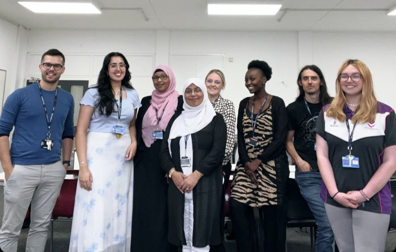

Komunikatívny prístup
Od prvej lekcie hovoríte. Gramatika slúži reči, nie naopak. Dôraz na plynulú, prirodzenú komunikáciu.
Prečo sme vznikli, čo nás poháňa a prečo sa naši absolventi k nám neustále vracajú.

Linglobal vznikla v roku 2012 z jednoduchého presvedčenia: učiť sa jazyk by malo byť dobrodružstvo, nie povinnosť. Zakladatelia školy — dvojica jazykovedcov s pedagogickými titulmi z Paríža a Madridu — sa vrátili na Slovensko s víziou vytvoriť školu, ktorá zlomí mýtus, že cudzie jazyky sú iba pre vyvolených.
Za dvanásť rokov sme vzdelali viac ako 1 200 absolventov. Naši študenti pracujú v medzinárodných organizáciách, prekladajú literárne diela, cestujú bez bariér a zakladajú vlastné firmy v zahraničí. Každý z nich začal rovnako — s prvým „Bonjour", „Hola" alebo „Guten Tag" v našich triedach.
Dnes Linglobal ponúka kurzy šiestich svetových jazykov s tímom štrnástich certifikovaných lektorov. Neustále rozširujeme ponuku o nové formáty — intenzívne víkendové kurzy, firemné školenia aj online hodiny pre tých, ktorí preferujú učenie z pohodlia domova. Naším cieľom je byť školou, ktorá rastie spolu so svojimi študentmi.
Metóda, ktorou učíme, je výsledkom rokov výskumu a praxe. Kombinujeme komunikatívny prístup s kultúrnym ponorením.
Od prvej lekcie hovoríte. Gramatika slúži reči, nie naopak. Dôraz na plynulú, prirodzenú komunikáciu.
Naučíte sa nielen slová, ale aj kontext — zvyky, humor, spôsob myslenia a reálne situácie z danej krajiny.
Naši lektori sú rodení hovoriaci alebo dlhodobo žijúci v krajinách, ktorých jazyk vyučujú.
Príďte sa osobne presvedčiť, prečo sa naši absolventi k nám neustále vracajú.
Kontaktovať nás